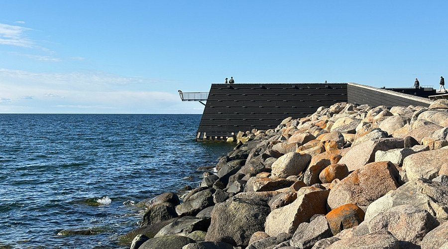

Jonathan
Del 9
TITANIC
Hektiska steg, hon hör sitt hjärta som om det bultar i hennes huvud. Stenarna vid kusten går förbi i hennes periferi. Det har mörknat nu. Mörkret, vattnet, fara, även med sina tankar ockuperade av den nuvarande situationen kan hon inte hjälpa att tänka på drömmen hon hade.
Innan hon ser dem hörs de - Jonatans röst, en kvinna, det måste vara Vera, och en man hon känner igen som Kim.
Kim
”Vem är han? Jag trodde att det bara skulle vara du och jag?” frågar Vera.
”Du behöver inte oroa dig, älskling. Han är en vän. Han är här för att ta med dig till ett ställe där vi kan vara ensamma - bara du och jag,” svarar Jonatan. Lögnen kommer snabbt. Den låter säker, pålitlig.
”Jag tänker inte bara följa med en främling för att du säger det. Även om det är din kompis får du väl fatta att det känns obehagligt.” Veras svar är diplomatiskt, men hennes rädsla skiner igenom.
Vera
Nu hörs Kim: ”Vi har inte all tid i världen för den här hysterin. Du får komma med här nu. Följ med snällt, så blir det lättare för oss alla.”
Mia ser gruppen nu. Hon står med ryggen mot havet. Kim närmar sig henne från platsen där han och Jonatan måste ha stått, intill en svart bil. Affärspartnerns kroppsspråk är hotfullt. Vera backar närmare kanten.
”Kom inte närmare!” skriker hon, medan hennes hälar trevar efter avgrunden bakom henne.
”Var försiktig, Kim. Skada inte henne!” ropar Jonatan. Han väntar fortfarande vid sidan av bilen.
Kim har nu slutit avståndet mellan dem. Han tar tag i Veras handled. Vera skriker, spjärnar emot.
”Rör mig inte!” protesterar hon.
Kim höjer sin hand. Ett högt ljud hörs när hud slår mot hud. Vera och Jonatan är tysta. ”Gör inte det här så jävla svårt. Bara var tyst och bete dig,” säger Kim.
Vera ser ner i marken. Det känns som att tiden står stilla i någon sekund. Mia märker nu att hela hennes kropp är spänd - det är som om hela hon vibrerar.

Vad ska Mia göra? Gå emellan och stoppa Kim, eller stå kvar på sitt gömställe?